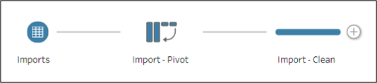
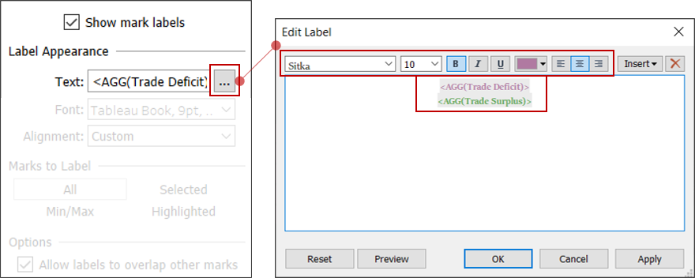

1. Introduction
The data in this makeover is the Merchandise Trade volume of Singapore from January 2011 to December 2020.
The data was retrieved from the Department of Statistics, Singapore (DOS).
2. Original Data Visualization

Figure 1: Original Visualization
2.1: Critique: Clarity
Clarity is how clear/lucid the chart in its message to the reader. The information should be free of ambiguity and confusion.
The chart refers to 2020 trade data, however there is an excerpt is referring to 2006 and 2009.
Figure 2: Chart quoting data out of context
By quoting that excerpt, the chart has quoted data out of context.
In the Visual Display of Quantitative Information, 2nd Edition by Edward R. Tufte, he wrote about quoting data out of context. (pp.74-76)
It would seem that the excerpt contains a key piece of information: The volatile trade dynamics between countries.This chart does not answer the heart of quantitative thinking, Compared to what?. The bubble chart made an attempt to highlight that information by including the excerpt. Ultimately, the reader has questions left unanswered by the visuals itself.
The surface area of the graphic, size of the bubbles, does not represent the true proportions of the numbers.
In correct visualizations, the size of the graphic should be directly proportional to the numerical quantities represented. We can quantify is using the Lie Factor.The Lie Factor was first defined by Edward Tufte.(Tufte, 1983, p.54). The formula below: \[ \text{Lie Factor} = \frac{\text{size of effect shown in graphic}}{\text{size of effect in data}} \]
The ideal lie factor would be 1, i.e.the graphic shows the exact numerical proportion and as such the graph can be said to have graphical integrity (Tufte, 1983, p.50).
For example: Comparing the bubble of United States vs Japan.
The total volume of trade of USA is SGD 102.4 Bil and that of Japan is SGD 49.6 Bil. USAs volume is approximately 51.6% greater than that of Japan: \[ \text{Size of effect in data} = \frac{102.4 - 49.6}{102.4} * 100 = 51.56\% \]
Comparing the diameters of the circle, USA bubbles radius is roughly 2.18 cm and Japans is 1.05 cm. If we get the area of the circles and compute the magnitude of difference, USAs bubble is 73.8% bigger than Japans: \[ \text{Size of effect in shown in graphic} = \frac{(2.18^2 - 1.05^2)}{(2.18^2)} * 100 = 76.8\% \]
Computing the Lie Factor, we get: \[ \frac{75.9}{51.66} = 1.49 \]
This tells us that the graphic has overstated the differences by 149%. In fact, if we observe the dimensions, we can see that the chart designer has linearly scaled the radius. \[ \text{Given that United State's bubble was set at 2.18 cm: }\\ \text{ }\\ \text{Magnitude of Difference} = \frac{102.4-49.6}{102.6} = 0.5166 \\ \text{Sizing of Japan's bubble} =\frac{2.18*0.5166}{2.18} = 1.05 \]
This is incorrect as linearly scaling the radius results in quadrupled area. \[ \text{Given that radius of the bigger circle = } r_{2} \\\text{, radius of smaller circle = } r_{1} \\ \text{ When the radius is linearly scaled i.e. } r_{2} = 2*r_{1} \\ \text{Ratios of the Circles = } \frac{\text{Bigger Circle}}{\text{Smaller Circle}} = \frac{\pi (2r_{1})^2}{\pi r_{1}} = 4 \\ \] Instead the areas of the circles should be scaled.
If we wanted a lie factor of 1, i.e.true representation, the radius of Japans bubble should have been approximately 1.5 cm to correctly represent the relative volumes.
Below shows the visual difference the Lie factor makes:

Figure 3: Comparing Japan vs United States
This occurs throughout the chart, for example, even with Thailand
Figure 4: Comparing Thailand vs United States
The perceived measure versus the numerical measure is vastly different. This erodes the graphical integrity of the chart as it does not accurately represent the true relative proportions.
The one dimensional volume of trade (addition of import and export) is sized by a two dimensional parameter, area of the circle. The use of circle tend to magnify perceived size as it is a shape of bilateral symmetry.
The example below shows that even if the area is appropriately scaled, it not poorly perceived that value is twice until explicitly stated or calculated.Figure 5: Area as a poor metaphor of values
Due to the placements of the bubbles on the chart, i.e.exports and imports coordinates, it is hard for the reader to understand the countrys ranking. For example, Malaysia versus United States. Malaysia ranks higher than United States in terms of Trade Volume, however it not clear. There is no visual hierarchy.

Figure 6: Lack of Visual Hierarchy
The tag highlighting net exporter/net importer, as shown in the figure below, is unclear as these dynamics change over time. It could create confusion as the reader might understand that the trade dynamics of Singapore with said country is static, however, that is not the case. For example, in 2017, United States would have the tag of biggest net importer.

Figure 7: Importer/Exporter Tags
The number of variables being explained on the chart exceed the dimensions of the chart. While the axis states Import and Export, the chart attempts to explains 5 phenomenons - Import, Export, Total Volume of Trade, Importer/Exporter roles, Comparison to 2009/2006.
This creates a messy chart as there are 5 different concepts, with neither fully explaining one. For example, if the reader would like to know the trade surplus with Singapore top net exporter, Hong Kong, he would be unable to do so as it is unclear from the chart.
As a circle is used, a shape of bilateral symmetry, the circumference of the circle also render a reading on the chart, either for export/import.
2.2: Critique: Aesthetics
Aesthetics is the visual appeal of the graph.
Low data-ink ratio Data-ink is the non-erasable core of a graphic (Tufte, 1983, p.88). It can be defined as shown below: \[ \begin{align} \text{Data-ink Ratio} & = \frac{\text{data-ink}}{\text{total ink to print the graphic}} \\ & = 1 - \text{proportion of a graphic that can be erased without loss of informaion} \end{align} \]
If the bubbles were to be removed, the center and labels kept, there will not be any loss of data-information. This makes either the circle or the tooltip redundant ink.
The axis is excessively labeled without much information as the reader is only able to get a range of values, but not the exact.
The color of the bubbles do not add information to the chart. In addition to that, some colors are repeated as well. This might lead to confusion leading the user to look up the Country labels.
The color of the bubbles in fact do not register any information as our eyes cannot map a trend to colorful signatures. In fact, were understanding more information from the labels rather than the color. It is, in fact, Chartjunk(Tufte, 1983, p.102)
The overall sizing of the bubbles in relation to the size of the chart is too big. This results in the bubbles crowded and hence, overlapping.
The interactivity of the chart does not add any features to the chart. In fact, it seems that the interactivity was added as a measure to un-hide the overlapping bubbles.
Other Minor critiques include:
The coordinate labels are far from the bubbles, and hence the reader must often trace on the chart to retrieve Import/Export values or to derive the Balance of Trade. The interactivity of the chart could have been better implemented.
The font type is san-serif, this might provide uneasy reading for the viewer.(Tufte, 1982, p.176)
The tooltip of China and Hong Kong is falling outside the area of the chart, as shown below.

Figure 8: Tooltips escaping the chart
3: Redesign Sketches
The rough idea of the dashboard and re-design will be like so:
Figure 9: Proposed Re-design
Issues Addressed:
Clarity Point 1: The user will be allowed control of the years and quarters. This enables the user to make comparison and does not quote data out of context. In addition to that, there can be comparison made using the Animations function in Tableau that allows the user to visually see the movement of countries in terms of ranking. This will also explain the dynamic nature of trading relationships between countries, often reflecting on the economic activity.
Clarity Point 2,3 & 4: The total volume of trade will not be mapped into the area of the bubbles.
Instead, the countrys will be ranked from lowest trade volume to highest trade volume, going from left to right. The country flag / abbreviations will be used to mark the bubbles so as to increase the data-ink ratio. This way the user is immediately able to see and understand the rank of the countries as they will not be scattered on an Import/Export axis.
The countrys corresponding import and export will be plotted on a bar chart. As tableau sizes the bar charts vertically, since the width of the bar charts are constant, the relative proportions will be clearly perceived as it is using a one-dimensional object ( a vertical line ) to represent a one-dimensional variable(export, import or total volume of trade).
Clarity Point 5: Using Tableaus tooltips, the countrys role as a importer/exporter will be prompted upon a hover. There will be a theme of colors used: Red, Blue, Purple and Green. These colors will be used throughout the chart so that the user is able to immediately understand what the colors signify.In addition to that, the Import and Export bars will also make it evident as to whether Singapore is in deficit or surplus with said country.
Clarity Point 6: To prevent overcrowding of information, the Balance of Trade chart will be created separately i.e.Supplementary Charts 1 and 2 shown above. This ensures that the no. of information carrying variables do not exceed the dimensions of the chart.
Aesthetics Point 1: The countrys identity will be informed using the countrys flag as well as the tooltip. This ensures no redundant ink and also increases the data-ink ratio.
Aesthetics Point 2 & 3: The axis will not be labeled excessively, instead reference lines, minimum points, maximum points and tooltips will be used to ensure maximum data-ink ratio
Aesthetics Point 4: Since well be using the barchart instead, there is no issue of overlapping. The fonts will be selected appropriately.
Aesthetics Point 5: The year and filter toggle allows the user to interact the chart and also the charts will be linked up so that the same filter can be applied to all and different parameters can be compared.
Aesthetics Point 6: A serif font will be applied to the chart. As tooltips are activated upon toggle and wrapped within the chart by Tableau, there will be no issue on the overflow. The tooltips also allow the user to activitely retrieve information without having to look at the axis.
4. Building the Alternative Design
4.1 The Data
The raw data is in .xlsx format.
It contains 2 sheets:
- T1 : Merchandise Imports by Region/Market, Monthly
- T2 : Merchandise Exports by Region/Market, Monthly
The figure below shows a snapshot of the data:
Figure 10: Snapshot of the raw data
4.2 Data Preparation
The data was prepared using Tableau Prep Building.
Load the Data.
First, drag and drop the data into the Home screen as shown below.Figure 11: Measures to Rows/Columns shelf
Once the data has loaded into the screen, select
Use Data Interpreter. This will remove unnecessary rows and columns.Figure 12: Data Interpreter
Drag and drop T1 into the workspace

Figure 13: Drag and drop T1
Pivot the data.
Since the dates are in the columns and the variables (Countries) are row data, we need to pivot the data.Right click on the
Importnode and selectPivotfrom the drop down.Figure 14: Select Pivot

Figure 15: Pivot Node
Once that is done, select the first date
1976 Apr+ Shift + last date2021 Mar. Drag and drop into thePivoted Fields Section.Figure 16: Pivoting the date columns into rows
Cleaning the data:
Right click on the Pivot Node and select
Clean Stepfrom the drop down listFigure 17: Adding the Clean node
Rename the columns as shown below.
Change theDatescolumn to date format - Click on theAbcicon and selectDatefrom the dropdown.
Figure 18: Rename columns and change Date format
Filter the dates
Select theDatespane and then click onFilter Values....
Figure 19: Select the Data panel and then select Filter
Next, add the following formula:
Figure 20: Formula for Filter
Filter the Country
Since the data also contains data by continents as well, we have to filer. The data by continents are in millions.Select the
Countrypane as we did above for dates, and add the following formula:
Figure 21: Filtering out continents
Slicing the country names.
Since all the country names contain Thousand Dollars, we will extract only the country names using anAutomatic Splitas shown below.Figure 22: Extracting country names
The
Importvariable is scaled down by a thousand. Hence, we will use the raw values. This is done as shown below:
Figure 23: Scaling up Import values by thousand
Once that is done, we will drag in T2. Rename the node as
Exports.
Figure 24: Adding Export data
Apply all the data preparation steps for Exports through a copy-paste of the flow.
Copy the flow that was created for
Imports(though a click and drag over the space). Right click and selectCopyand thenPastein an empty area.
Figure 25: Copy the Flow
Drag the
Exportsnode over the newly pasted flow and drop into theAddbox.Figure 26: Connect Export node to data prep flow
Joining the two tables.
Right click on Imports final step: Clean step and select
Join.
Figure 27: Creating Join node
The
Joinnode will appear. Drag and drop the final step in the Export flow and drop it into the Union node as shown.
Figure 28: Connecting Export node to Join
The workspace below will be prompted to add in the field for the join.
Add the following:
Figure 29: Selecting conditions for Join
A right join is used as there are more countries in Import than Export. This is to prevent any loss of data before the Final Clean.
Right click and add a
Clean Step
Figure 30: Final clean
Remove all duplicated columns. Right click and select
Remove.Adding
Total Volume of Trade&Balance of TradeOnce the duplicated columns are removed, we will add 2 more calculated fields.
Figure 31: Adding Balance of Trade and Total Volume
Remove Null values
Balance of Trade:
There are null values for the balance of trade as data for export for these countries does not exist. The total value of these make up a small percentage of the total data and hence we will exclude them.Right click and select
Exclude.
Figure 32: Excluding null values for BOT
Total Volume of Trade:
We will remove the rows where total volume of trade is zero.Do as shown below:

Figure 33: Excluding null values for Total Volume
Right click on the
Final Cleannode and selectPreview in Tableau Desktop.Figure 34: Exporting to Tableau Desktop
The data is ready for visualization. Save the workbook in local directory.
4.3 Creating the Chart
Right click on the
Countryvariable in theDatapane and selectAliases. We will change the names so that they appear shorter in the labels/tooltips.
Figure 35: Adding aliases
Figure 36: Commit changes
Create the following worksheets shown below.

Figure 37: Creating worksheets
According to the sketch, we will create two overall charts: Overall Bar and Overall Line.
The re-visualization of the original chart will be prepared in two parts and then place together on the dashboard, Movement of Trade Partners, MOTP (1) and MOTP (2).
The supplementary charts are Balance of Trade and Overall Balance of Trade. The Balance of Trade chart will show the top 5 and bottom 5 in terms of balance of trade, whereas the Overall Balane of Trade will follow the Singapores account with said country from 2011 to 2020.
Creating the first chart: Overall Bar
Drag and drop the variables into the
RowsandColumnsFigure 38: Measures for Overall Bar
This will create 2 charts, one for the export and one for import on separate axis.
Under the
AllMarks card, change the chart type to Bar.Figure 39: Change to Bar chart
By doing so, we have changed both charts to a bar type.
We will invert the
Importbar chart next. This is so that the reader can visually comprehend the total volume of trade at the particular Year.Right click on the
Importy-axis and selectEdit Axis...Figure 40: Inverting Import Chart
We will also truncate the bar chart and set the start point at SGD 350 Billion.

Figure 41: Truncating bar chart
Set the start point at SGD 350 Billion for
Exportaxis too. Note that the start point should be set at 350 Billion for both.
Figure 42: Repeat for Export chart
We will add reference lines. These reference lines will serve as markers instead of the axis ticks. This is to increase the data-ink ratio. As the chart is interactive, there is not much need for the axis markings.
Reference will be added at 2 points for both import and export: Minimum and Maximum. A third line will be added that will be shared between the two at 350 Billion. This is so that the reader knows the start point.
Right click on theExporty-axis and selectAdd Reference Line.Figure 43: Adding reference line
Add the following settings to the reference line.

Figure 44: Configuring the position reference line
Once the line has been added to the chart, right click on the line and select
Format.Figure 45: Formating the line
The
Formatpane will be prompted on the left.
UnderAlignmentset the display to be in the center.
Figure 46: Configuring the aesthetics of reference line
Under
Numbers, set the display a abbreviated numbers.
Set the number to 2 decimals.
Figure 47: Rounding up the numbers displayed
Repeat the above for Maximum and also for the Imports chart.
The line will be red forImports.
The chart at this point will look like so:Figure 48: Intermediate Chart
Next, we will set the color of the bar chart to be white, and only showing the border.
Select blue forExportand red forImport
This is done so that the colored bars do not overpower the chart and create redundant ink.Set the colors of the bars:
Figure 49: Setting up the colors of the bar chart
Hide the axis for both chart. Right click on the axis/measure in the
Rowsshelf and un-checkShow Header.Figure 50: Hide axis
Hide the field labels i.e.column labels. Right click on the label and select
Hide Field Labels for Columns.Figure 51: Hide Field labels
Edit the title. Right click on the chart and edit as show.

Figure 52: Editing the title
Edit the title as shown below. Bold and color the words Import and Export and this reinforces to the reader that red=Import and blue=Export.

Figure 53: Inking text data
Edit tool tips. Select the
Tooltipbox under All marks card. Make the changes as shown below:
The rest of the text will be in grey and font size 10 while the values will be font size 12
Also, they will be color coded and bolded.
This is done as data inking.
Figure 54: Setting font format for Tooltips
Next, we will format the Tooltips number so that it only shows decimal places. First, right click on the variable in the
Rowsshelf and selectFormat.
Figure 55: Formatting Tooltip number
Under both
AxisandPane, set the Number to only display 2 decimal places in the billions.Figure 56: Change in both Axis and Panes
Repeat the process for all
Tooltipsmeasures.Remove the grid lines. All grid lines will be removed. Right click on an empty space in the chart, and select
Format. Select None for all as shown below.
Figure 57: Removing borders and dividers
This removes all the external borders and dividers. In order to remove the internal gridlines, we will do as follows:

Figure 58: Removing chart gridlines
This is done as the grid lines are redundant ink. They have no purpose as any data required can be read directly through the Tooltips.
Change all fonts, to Sitka and font size 10pt. Right click on the axis/reference line/title and select
Formatto change the font, font size and also to bold it.
Figure 59: Changing aesthetics
The chart will look like so:

Figure 60: Final Product of Overall Bar
Creating the second chart: Overall Line chart
Drag and drop the variables into the
RowsandColumns. We will dragBalance of Tradetwice. We do this so that one of the chart can serve as markers.
Figure 61: Measures for Overall Line
Two charts will appear. Click on the axis of the bottom chart, and select
Dual Axisand then synchronize them to ensure that the circles and line add up.
Figure 62: Create a dual axis
Figure 63: Synchronize
On the Marks pane, on either one of the charts, change the chart type to
Circleand set the color to black.
This is done so that the point along the lines are bigger and clearer and the user can hover over the points easily. Aesthetically, it is easier to track the points when the markers are larger.Figure 64: Setting the up the Circle chart
Leave the other chart as a
Linetype.Just as we did earlier, the y-axis will be hidden (see figure 50) and we will only show 2 reference lines to increase the data-ink ratio.
- One for maximum and one for minimum.
- Set the color to green and label it as Highest/Lowest Trade Surplus: SGD
- This is done so that the reader associates the color green for Trade Surplus.
We will truncate the y-axis to start from 15 billion.

Figure 65: Truncating the y-axis
Make the changes to the Tooltip as well as the title as we did for the previous chart.(see Figures 53 @ref(fig: 4-2-18)) This time using the color green to mark the
Balance of Trade.Set the numbers to 2 decimal places for the tooltips (see Figure 55) and reference lines(see Figure 47)
Remove all gridlines (see Figures 57) and axis lines (see Figures 58)) as we did earlier.
The chart will look like so:

Figure 66: Final Product of Overall Line
Creating the third chart: MOTP (1)
This chart is the re-visualization of the original chart.
Drag and drop the variables into the
RowsandColumns.Figure 67: Measures for Overall Line
Drag and drop the
Countryvariable into the detail box, as currently it is an aggregated point. This way each point will refer to a particular country.Figure 68: Adding Country to detail
Add filter for country.
This is done as we want to show the top 10 partners per year respective to Total Volume of Trade.
Drag and dropCountryinto the Filters box.
Figure 69: Add Country into Filters
Next we will make the changes as shown below. This will sieve out the top 10 by the
Total Volume of Tradeby the year. We will configure the year filter in the following few steps later on.
Figure 70: Filtering top 10 Countries by Total Volume
Drag and drop
Countryinto the shape box. This way we will be able to customize the icons.
Figure 71: Add Country to shape to customise the icons
On the right pane, the shape legend will come up. Select
Edit Shape.
Figure 72: Edit Shape under Shape legend
Select relevant country icon pack. This icon pack was downloaded from Flaticon.com and Freepik.com.

Figure 73: Adding custom icon pack
Creating parameter. The year and quarter will be user toggled, hence we will create two parameters.
- Click on the arrow button in the Data pane and select
Create Parameter.
Figure 74: Create Parameter
- Create the Year parameter

Figure 75: Configuration for Year Parameter
- Create the Quarter parameter

Figure 76: Configuration for Quarter Parameter
- Click on the arrow button in the Data pane and select
Next, we will create the calculated fields to link the parameter to.
Click on the arrow button in the Data pane and create 2 fields to be linked to the parameter.- Date Filter

Figure 77: Formula for Date Filter
- Quarter Filter
Figure 78: Formula for Quarter Filter
- Date Filter
Drag and drop the
Date FilterandQuarter Filter. Select True when the window, shown below, prompts upon dropping.
Figure 79: Select True
Right click on both filters and select
Add to Context. This is so that Tableau applies the data and quarter filter before sorting out the top 10 values as Tableau follows an order of operations when applying filters.
Figure 80: Add to context
In the
ParametersPane, right click on both year and quarter parameters to selectShow Parameter
Figure 81: Show parameters
The parameter pane will appear on the left to be toggled. However, this will be used for debugging purposes. The parameter controls will be the
Year ButtonsandQuarter buttonsthat will be created later on.Edit the title. Insert the dynamic parameter values so that the title changes according the the user selection.

Figure 82: Create a dynamic title
Create 2 calculated fields
NetExporterandNetImporter. This way when the user hover over the country icons, the role of the country and year will be evident.Figure 83: Create Calculated Field: Net Exporter
Figure 84: Create Calculated Field: Net Importer
Drag and drop into the Tooltip box

Figure 85: Add to Tooltip
Edit as shown below:

Figure 86: Add color coding
Remove all grid lines/headers/field labels as we did previously
See figures:The chart will look like so:
Figure 87: Final product of MOTP(1)
Creating the fourth chart: MOTP(2)
This chart will look similar to the Overall Bar Chart that we created previously. First drag and drop the variables into the
RowsandColumns.
Figure 88: Measures for MOTP(2)
Drag and drop
Date Filter,Qtr FilterandCountryinto the filters box.- Add
Date FilterandQtr Filterto context (see Figure 80) - The
Countryshould be filtered by Total Volume of Trade as MOTP (1) would be linked to this chart as shown below.
Figure 89: Filters to be added
- Add
We will invert the
Importaxis as we did earlier for the Overall Line Chart (see Figure 40)Now, we have to sort the chart so that it follows MOTP(1)s countries.
To do so, drag and dropTotal Volume of Tradeinto theRowsshelf.Figure 90: Drag and drop Total Volume of Trade into Rows
A third chart will appear below. Select the chart by clicking on the axis, and then select the sort button on the Toolbar above

Figure 91: Select the chart

Figure 92: Sort in ascending, so that highest appears on the right
By doing so, the chart will now be sorted according to
Total Volume of Trade. Once it is sorted, select the variable from theRowsshelf and drag it away effectively removing the third chart.Set the colors of the bar charts to white with only the borders colored, red for imports and blue for exports, the steps can be found above as we did for the Overall bar chart. (see Figure 49)
Add a reference line to label the chart area. Instead of using axis label, we will place the label in the background of the chart.
Right click Export axis and make the following changes below. The average calculation is arbitrary, it can be any constant value as long as it places it somewhere in the middle of the chart. However, as the user toggles the filters, selecting a dynamic calculation will allow the reference line to be re-calculated and hence stay at the same relative position.
Figure 93: Configuring the reference line
Once that is done, right click on the reference point and select
Format
Make the following changes:Figure 94: Formatting the reference line
Under
Alignment. align the text to the left.
Repeat forImports, labeling it as Imports and also using the same color as the bar chart (red)Editing Tooltips. Drag and drop the following variables into the Tooltip box.
Figure 95: Formatting the reference line
Format is as follows:

Figure 96: Formatting the reference line
The chart will look like so:
Figure 97: Final product for MOTP(2)
Creating the fourth chart: Balance of Trade chart
Drag and drop the variables into the
RowsandColumns.
Figure 98: Measures for Balance of Trade chart
Create 2 parameters,
Top NandBottom N. These parameters will be user toggled. This will give the user autonomy to see 1-15 top countries that Singapore is in surplus with and similar 1-15 top countries that Singapore is in deficit. This
Figure 99: Configuring Top N

Figure 100: Configuring Bottom N
Right click on the
Countryvariable and create 2 sets,Top N by ParameterandBottom N by Parameter. This way, the top N and bottom N values will be displayed.Figure 101: Creating a set
Combine the two created sets and
Create Combined Set.
Click on the first parameter + CTRL + click on the second parameter.
Figure 102: Combining the set
Drag and drop the newly created set,
Date FilterandQuarter Filterinto the Filters box. Just as we did before, addDate FilterandQuarter Filterto context.(see Figure 80)
Next, click on the Sort button as show below.Figure 103: Sorting the combined set
Creating dynamic labels.
- Create calculated fields
Trade SurplusandTrade Deficit.
Figure 104: Create calculated field: Trade Surplus
Figure 105: Create calculated field: Trade Deficit
- Drag and drop the newly created field in the
Labelbox.Figure 106: Drop Trade Surplus and Trade Deficit into Label
- Click on the box and edit that. We will use purple to denote for
Trade Deficitand greenTrade Surplusas we did for the Overall Line chart.Figure 107: Color coding
- Create calculated fields
Set the color of the bars to white and only display the black borders, just as we did previously.(see Figure @(fig:4-2-14A)) This allows the colors of the labels to be in contrast.
Edit the axis
- Set the tick to a very large value as we will only show the zero mark.

Figure 108: Removing additional ticks
- Set the range of the axis as the following so that the the bottom countries(negative values can be seen)

Figure 109: Range of x-axis
- Set the tick to a very large value as we will only show the zero mark.
Edit the title as shown below, insert the parameters as we did earlier(see Figure 82)
Figure 110: Editing the title
The chart will look like so:

Figure 111: Final product of Balance of Trade Chart
Creating the fifth chart: Overall Balance of Trade
Drag and drop the variables into the
RowsandColumns.Figure 112: Measures for Overall Balance of Trade
Drag the drop the variables as shown below

Figure 113: Page and Marks measures
Under the
Year of Datecontrols that pop up on the right legend pane, make the following changes so that as the icons move along the years, and the user can see the trail.
SelectShow Historyand make the change:Figure 114: Trail settings
Add a filter so that the chart only shows the Top 15 and Bottom 15 countries that appear in the Balance of Trade chart.
Figure 115: Country filter to be added
Edit shape and add the country icon pack as we did earlier.(see Figure 71)

Figure 116: Customizing shape icons
Edit the tooltip as shown below
Figure 117: Editing the tooltip
Adding references to show the Surplus and Deficit areas. To keep redundant ink minimal, we will not shade in the area. Instead we will add in reference lines as we did before.
- Surplus Area The value at which the line will be placed it arbitrary.
Format the line as such:
Figure 118: Configuring surplus reference line
Figure 119: Formatting surplus reference line
- Zero Line Just as we did before, instead of using the axis ruler, a reference line will be placed.
Format the line as such:
Figure 120: Configuring zero reference line
Figure 121: Formatting zero reference line
- Deficit Area The value at which the line will be placed it arbitrary.
Format the line as such:
Figure 122: Configuring deficit reference line
Figure 123: Formatting deficit reference line
- Surplus Area The value at which the line will be placed it arbitrary.
Edit the title

Figure 124: Editing the title
The chart will look like so:

Figure 125: Final product of Overall BOT chart
Creating the Year buttons
Instead of using the drop down for the parameter controls, we will create custom Year buttons for aesthetic purposes.
Drag and drop the following in
Columns.Figure 126: Measures for Year buttons
Change the chart type to Shape and increase the size.

Figure 127: Change shape and size
Drag and drop
Datesto the Label box and edit as shown below so that the Year is displayed in the center of the circle
Figure 128: Add Dates to label
Click on Tooltips and uncheck
Show tooltips.
Figure 129: Disabling tooltips
Remove all gridlines/dividers so that only the circles will be visible.
Figure 130: Removing all gridlines/dividors
Hide the Title/Axis/Field Labels etc.
Set the color of the circle as white and border as black.
The buttons will look like so:
Figure 131: Final product of Year buttons
Creating the Quarter buttons
Create a calculated field
Qtr Buttons. This is an arbitrary field to create values 0-4.
Figure 132: Creating Quarter field
Drag and drop the newly created variable into the
Columnpane. Click on the triangle drop down, set toDimension. Click again andEdit Aliases..as shown below.
Figure 133: Setting to Dimension and Change Aliases
Drag and drop
Qtr Buttonsinto the label box.
Figure 134: Add quarter labels
Edit the aesthetics of the buttons and make the changes as we did for Year too.

Figure 135: Formating the buttons
The buttons will look like so:

Figure 136: Final product of Quarter buttons
Setting Up the Dashboard
Once the charts have been positioned on the Dashboard, we will connect them. This will be done using
Actions.There will be 2 dynamics set using Actions.
Parameter Actions.
Year ButtonsandQtr Buttonswill be set using these.
This will connect the values of the Year and Qtr buttons to the actual parameter selections.
Under Actions (as shown above), selectAdd Actionand thenChange Parameter.
Select the corresponding Parameters that the button connects to as shown below.

Highlight Action
2 highlight actions will be set.The first one will be between
Overall BarandOverall Line. Any selection in either chart, will highlight the other charts at that particular year. Set the following settings.
Under Actions (as shown above), selectAdd Actionand thenHighlight...
Set the settings shown below.

The second highlight action will be between the other 3 charts. This would be set up such that any selection of a Country bubble, will highlight the country in the other 2 charts. This way the reader can select any particular country he wishes to see.

Adding animations
To ensure that the charts transition smoothly, we will add animations.
Under
Format, selectAnimations..
When the Animations pane shows up on the right, make the following changes. It will be set to Slow so that the user can see the movements and track the ranking of the countries(via multi select) over time.

5. Final Visualization
The final interactive dashboard looks as such:

To see the interactivity & animations:
6. Insights
Singapores Balance of Trade has always been in a surplus.
From 2011 to 2020, the surplus has increased by approximately 70% overall.
If we look at the total volume over the years, the volume of trade in 2020 (940 Billion) is approximately the same as that in 2011 (943 Billion). However, the Balance of Trade is much higher. This is like the outcome of shifting saving and investment behaviours in the domestic economy.
Volume of Trade Insights
Once a prominent Trade Partner of Singapore, Indonesias trade with Singapore has been on a decrease since 2014.
In 2011, total volume of Trade of Indonesia with Singapore was 81.56 Billion comparable to Chinas 101.75 Billion, and was approximately 80% of the highest volume (Malaysia)
In 2020, total volume of Indonesia went to 48.82 billion, compared to Chinas 136.20 billion, making it 35.8% of the highest volume (China)
The highest drop began in Quarter 3 of 2013.
Consistently, Malaysia, China, United States and Hong Kong have been Singapores top trade partners over the years.
We can see Chinas meteoric rise in the world reflected in Singapores trade too.
From 2011, China has risen up, very quickly establishing itself by the third quarter of 2015 as Singapores biggest partner.
While the top 9 countries rotate between, China, Hong Kong, Malaysia, Taiwan, United States, Indonesia, Japan, South Korea, and Thailand.
The 10th position is often changes. It is taken by U.A.E., Australia, India, Vietnam
Balance of Trade Insights
Hong Kong has been in a trade surplus with Singapore consistently through the years.
The surplus has increased by approximately 11%.
In addition to a falling total trade volume with Indonesia, the trade surplus has also reduced over the years.
From a surplus of 32 Billion in 2011 to 10.32 billion in 2020.
Singapore was consistently in deficit with United States from 2011 - 2019. However, in 2020 Quarter 2, Singapore went into a surplus with United States, making United States the 6th highest surplus at 5.67 billion in 2020 overall
While Vietnam is not in Singapores top 10 in terms of volume of trade, there is a sizeable trade surplus in the trade relationship. Consistently, approximately 20% of the largest surplus, ranging from 10-11 billion.
Trade deficit has been consistently Taiwan and Saudi Arabia have been large, with Taiwans the largest since 2018.